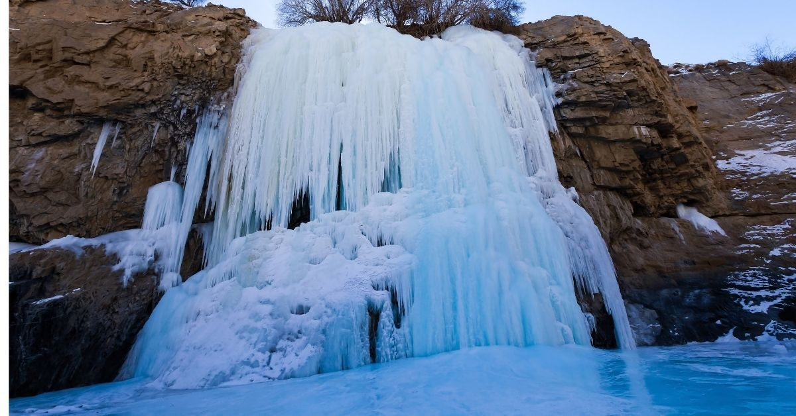
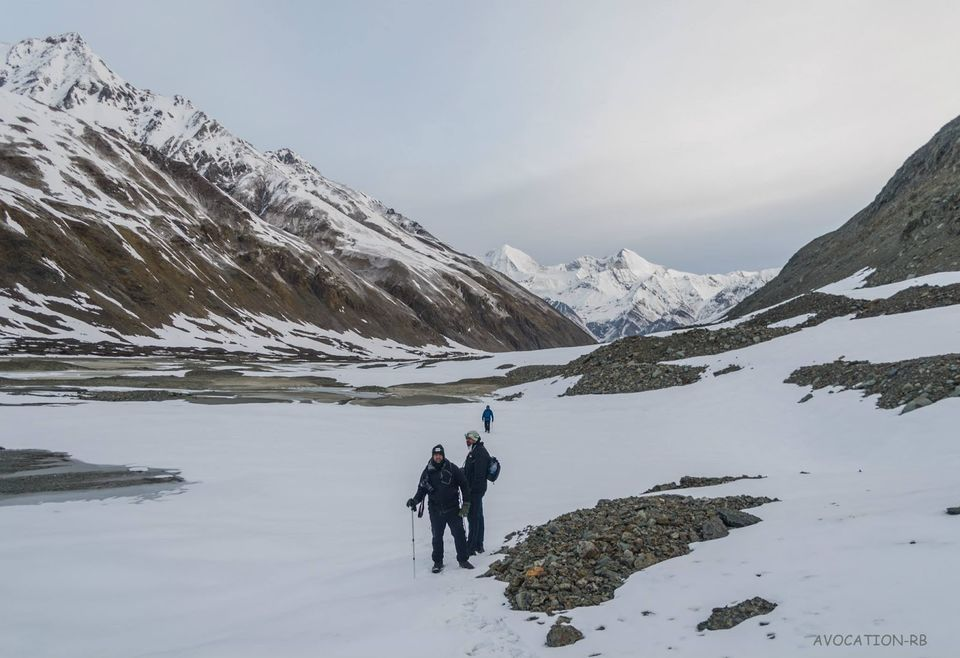
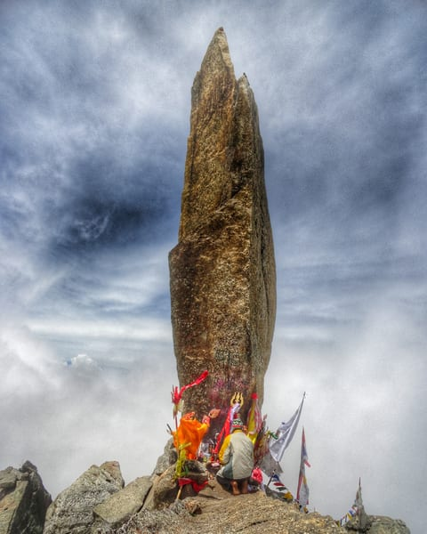
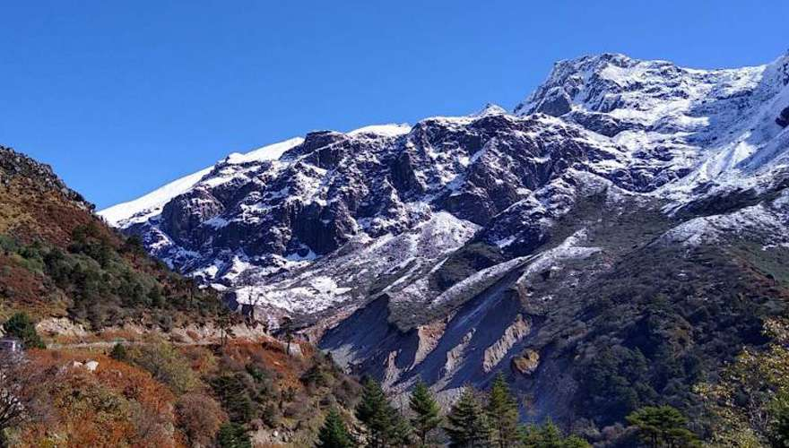

Adventure enthusiasts, those looking for difficult adventures, this is our list of most dangerous hiking trails in India.
For the record these treks are not for the amateurs
due to the treacherous terrain, wildlife
threats, risky situations, and nerve-wracking
places that include fatal death.
1. Chadar Lake Track

Passing through the valley over the frozen Zanskar River is the sole link between the Zanskar village and the outside world.
Thin slippery ice, a skid, unforseen break, fall in the ice-cold water, and adios to the world!
Maximum Elevation : 3390 meter above sea level
2.Auden's Col Trek
Coupling the Khatling glacier and the Jogin I glacier is the Auden's Col pass. Standing at a height of 18,012 ft the trail to this
gigantic pass presents a great opportunity for adventure enthusiasts to experience Himalayan beauty accompanied by tough terrain
and is meant only for experienced trekkers with long-driving mettle.
Maximum Elevation : 5284 M meter above sea level
3.Lamkhaga Pass

With a special permission from the Indian Government this trek can be attempted at one's own risk.
Maximum Elevation : 5490 M meter above sea level
4. Kinner Kailash Circuit Hike

Breathtaking beauty of the Himalayas, dead silence will accompany you at every step, however there will be no one to save you if you fall or freeze. "All by myself......"
Maximum Elevation : 5242 M meter above sea level
5.Green Lake Trail on Everest

With heaps of challenges this trek remains the most unexplored and overwhelming and alarming. If your lucky you might get a chance to meet snow-beasts and Yetis.
Maximum Elevation : 5500 M meter above sea level